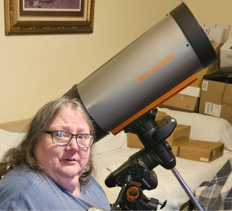

Orange County Telescopes
There are basically no telescope dealers in Alaska. I have tried a couple other dealers outside of Alaska, and have found one that I truely love, and want to thank for all their help. Mike and Lorenz have gone above and beyond just selling equipment; They are there to answer questions before and after the sale. They offer a wide range of equipment needed, and if they don't have it, they will find it. They are real people, and not stuffy salesmen. They back up what they sell, and didn't have any issues with sending it to Alaska. Hit the button below, and visit their website!
Orange County TelescopesCloudy Nights Forum
Cloudy night is basically a community of people in all stages of astronomy. They have forums, articles and equipment reviews, and news about what is going on above us. It's a great place to visit when you need a question answered, or just want to read about something happening in the sky.
Cloudy NightsEd Ting
Ed Ting has a wonderful YouTube page. I think he has tried to direct his videos to experienced observers, but over the years, I have learned much from his museings. Ed mostly does reviews, but has many videos on the "how-to" side, and he gives solid advice that he learned from experience--.
Ed TingAbout Me
And finally, a who am I paragraph will go here….I just need to write it....
